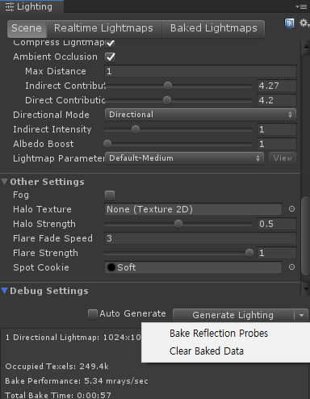

FAQ¶
Q) Currently any static mesh can be created and edited using UModeler within the editor. Is it also possible to edit meshes at runtime?¶
Sadly UModeler is only available for editing in only Editor not runtime. We have a plan to develop Runtime UModeler but it could be a separated asset but We’re not sure how the runtime editor would be provided. It won’t take short time to make it. We’ll share progress every time there will be updates about the Rumtime Editor.
Q) Is it possible to make a mesh procedurally with codes at runtime?¶
Yes, it has been possible since Version 2.6. Using UModeler component you can create any static meshes procedurally. But this has not been documented yet. We’re going to expose this feature officially with examples and documents sometime soon.
Q) How can a static mesh be converted to UModeler mesh?¶
You have to select a game object with a static mesh. And go toTool > UModeler > UModelerizeat the top of Unity editor to convert the selected mesh. Several static meshes can also be converted if you select them before trying to UModelerize.
Q) The UModelerized mesh is still a triangle-based shape. I want to have more like UModeler mesh. In other words All adjacent coplanar faces have to be merged into one face.¶
Click onCombine Toolbutton once you select all polygons. This will combine adjacent coplanar polygons into one polygon. See the Combine Polygon Tool.
Q) How can I set the pivot to the center of UModeler object?¶
Navigate toPivot to CenterinTweakgroup and click onCenterbutton in Properties.Top Center,CenterandBottom Centerbuttons were added from Ver 2.6.9
Q) UModeler meshes disappear.¶
Click onTools > UModeler > Refresah Allat the top of the editor. It will update all UModeler meshes in the current scene.
Q) Broken lightmaps¶
Click on
Tools > UModeler > Refresah Allat the top of the editor. If lightmaps are still broken, make sure thatLight Staticis on inLocal Settingstool. And then try toClear Baked DataandGenerate LightinginLightingwindow.